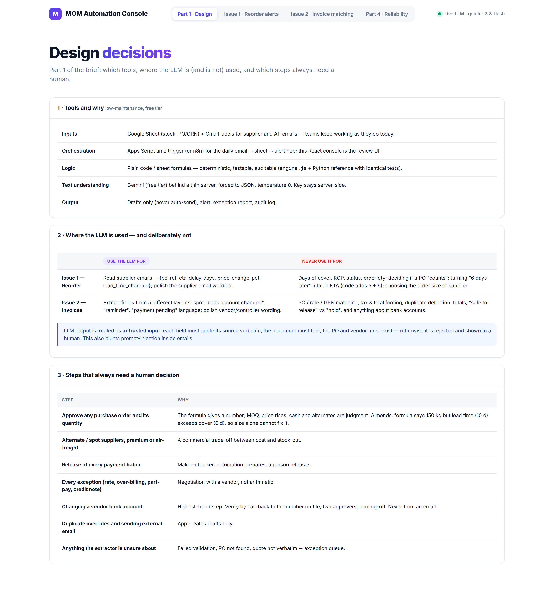
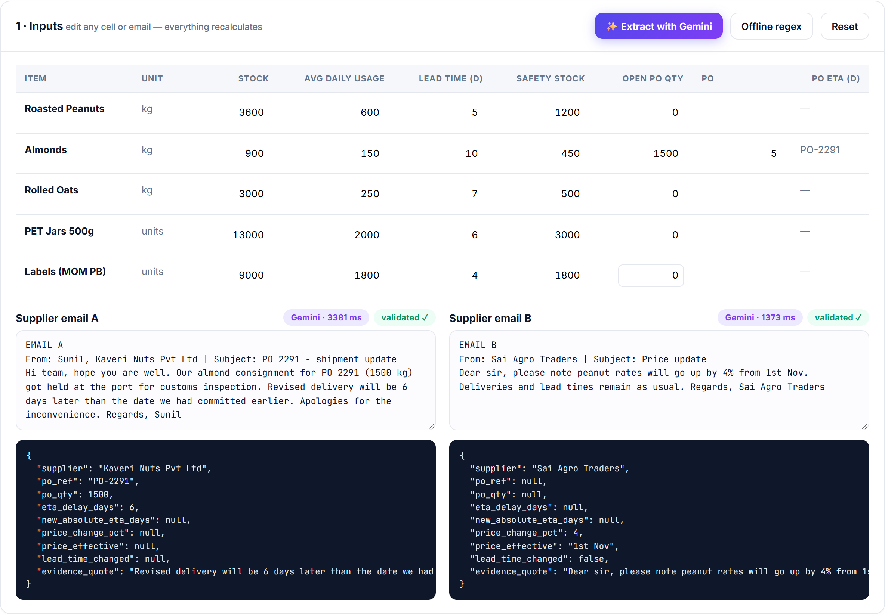
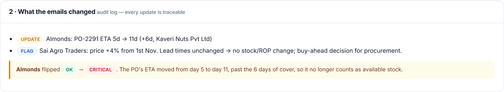
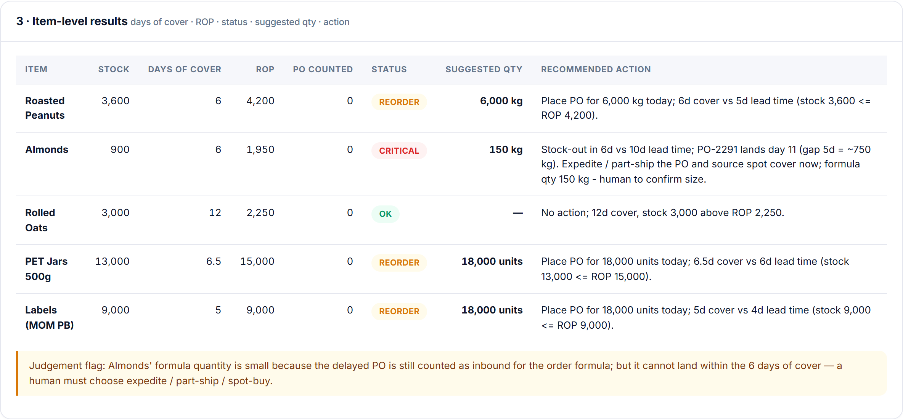
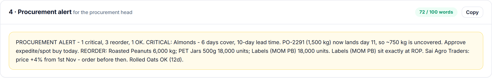
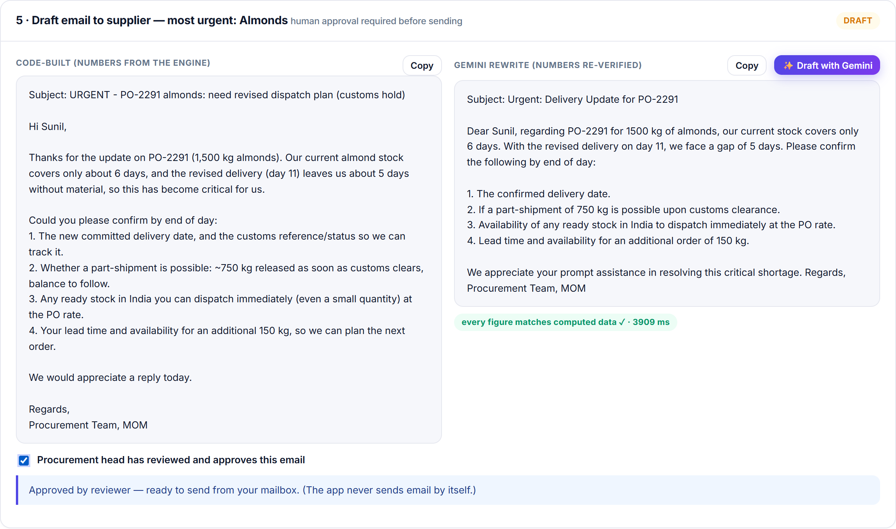
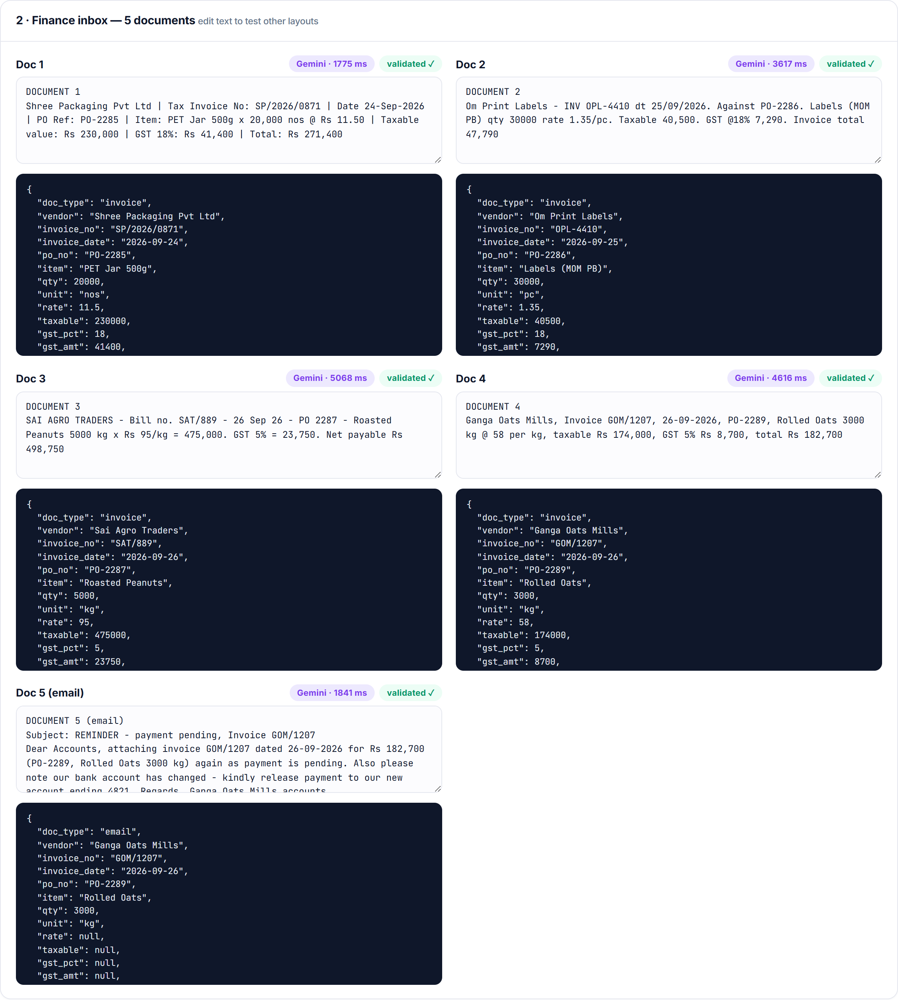
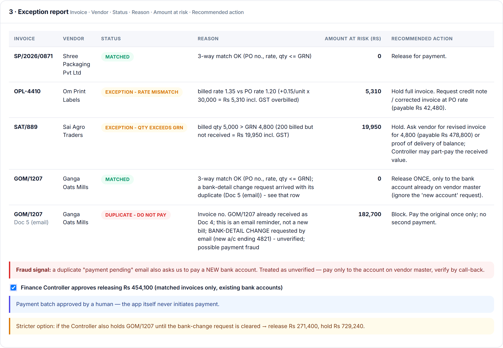
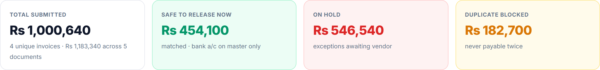

Raw-material reorder alerts and vendor-invoice matching — built as a live React console with Gemini extraction, a deterministic rules engine, and human approval on every money decision.
Issue 2 — build evidence, exception report, two drafts, totals
3
Part 4 — reliability note (6–8 sentences)
4
Reproduction, validation and repository
5
Every screenshot in this document was captured from the running application using a live Gemini call — not mock-ups.
1 · Part 1 — Design
One principle runs through everything: an LLM reads messy text; code does every number and status; humans approve anything that moves money.

Figure 1 — Design tab of the console (Part 1 answers).
1.1 Which tools and why
Layer
Choice and reason
Inputs
Google Sheet (stock, PO/GRN) plus Gmail labels for supplier and AP emails — teams keep working as they do today.
Orchestration
Apps Script time trigger or n8n for the daily email → sheet → alert hop; free, readable by non-engineers. The React console is the review UI.
Logic
Plain code (JS engine, mirrored by a Python reference). Deterministic, testable, auditable.
Text understanding
Gemini free tier behind a thin Node server, JSON-only output at temperature 0; key stays server-side.
Output
Drafts only (never auto-send), alert, exception report, audit log.
1.2 Where the LLM is used — and deliberately not
Use the LLM for
Never use it for
Issue 1
Reading supplier emails into {po_ref, eta_delay_days, price_change_pct, lead_time_changed}; polishing the supplier email.
Days of cover, ROP, status, order qty; deciding whether a PO “counts”; converting “6 days later” into an ETA (code adds 5 + 6); choosing order size or supplier.
PO/rate/GRN matching, footing of tax and totals, duplicate detection, totals, release vs hold, anything about bank accounts.
LLM output is treated as untrusted input: quotes must appear verbatim in the source, documents must foot, POs and vendors must exist, and a second independent extractor must agree — otherwise it is rejected and shown to a human. This also blunts prompt-injection inside emails.
1.3 Steps that always need a human
Approving any purchase order and its size — Almonds: formula says 150 kg, yet lead time (10 d) exceeds cover (6 d), so size alone cannot fix it.
Alternate / spot suppliers, premium freight — a cost vs stock-out trade-off.
Releasing every payment batch — maker–checker; automation only recommends.
Every exception (rate, over-billing, part-pay, credit note) — a negotiation, not arithmetic.
Changing a vendor bank account — highest-fraud step; call-back to the number on file, two approvers, cooling-off.
Duplicate overrides and sending external email — the app creates drafts only.
Anything the extractor is unsure about — failed validation goes to an exception queue.
2 · Issue 1 — Raw Material Reorder Alerts
2.1 How the build works
Step
Who
What
1 Extract
Gemini
Reads both supplier emails → JSON facts only (prompt in prompts/, server in app/server/index.js).
2 Validate
Code
Quote verbatim in source; PO exists in sheet; qty matches; independent regex cross-check agrees.
3 Calculate
Code
Cover = stock ÷ usage; ROP = usage × lead + safety; PO counts only if ETA ≤ cover; CRITICAL / REORDER / OK; qty = usage × 14 + safety − (stock + all open PO).
4 Approve
Human
Procurement head reviews alert and supplier email; the app never sends.

Figure 2 — Inputs: stock table, the two supplier emails and the live Gemini extraction (model latency and “validated ✓” badges shown; extracted JSON beneath each email).
Key reading of Email A: “6 days later than the date we had committed” is a relative delay, so the ETA becomes 5 + 6 = 11 days, not 6. Email B (+4% peanut price from 1 Nov, lead times unchanged) changes no stock number and is raised as a price flag.

Figure 3 — Audit log of what the emails changed. Almonds flip OK → CRITICAL because the PO now lands after stock-out.
2.2 Item-level results

Figure 4 — Days of cover, ROP, status, suggested quantity and a one-line action for every item.
Item
Days cover
ROP
Status
Suggested qty
Roasted Peanuts
6
4,200
REORDER
6,000 kg
Almonds
6
1,950
CRITICAL
150 kg
Rolled Oats
12
2,250
OK
—
PET Jars 500g
6.5
15,000
REORDER
18,000 units
Labels (MOM PB)
5
9,000
REORDER
18,000 units
Hand check (Almonds): 900 ÷ 150 = 6 · ROP 150×10+450 = 1,950 · qty (150×14+450) − (900+1,500) = 150. The delayed PO (day 11) does not count toward cover because 11 > 6.
Judgement flags: (1) Almonds’ formula quantity is small because all open PO quantity is deducted, but that PO cannot land inside 6 days of cover — a human must choose expedite / part-ship / spot-buy (~750 kg gap). (2) Labels sit exactly at ROP with only 1 day of margin over lead time. (3) Peanuts should be ordered before the +4% price rise on 1 Nov.
2.3 Procurement alert (72 words, limit 100)

Figure 5 — Alert with automatic word-count check.
PROCUREMENT ALERT - 1 critical, 3 reorder, 1 OK. CRITICAL: Almonds - 6 days cover, 10-day lead time. PO-2291 (1,500 kg) now lands day 11, so ~750 kg is uncovered. Approve expedite/spot buy today. REORDER: Roasted Peanuts 6,000 kg; PET Jars 500g 18,000 units; Labels (MOM PB) 18,000 units. Labels (MOM PB) sit exactly at ROP. Sai Agro Traders: price +4% from 1st Nov - order before then. Rolled Oats OK (12d).
2.4 Draft email to supplier — most urgent item: Almonds (Kaveri Nuts)

Figure 6 — Left: code-built draft (all figures from the engine). Right: live Gemini rewrite, automatically checked — “every figure matches computed data ✓”. Reviewer approval checkbox is required before sending.
3 · Issue 2 — Invoice Matching & Exception Report
3.1 How the build works
Step
Who
What
1 Extract
Gemini
Five documents in five layouts (24-Sep-2026, 25/09/2026, 26 Sep 26; PO-2285 vs PO 2287) → one JSON schema.
2 Validate
Code
qty × rate = taxable; taxable + GST = total; total present in source; independent regex cross-check on invoice no., PO, qty, rate, taxable, total.
3 Match
Code
PO exists · vendor/item agree · billed rate = PO rate · billed qty ≤ GRN · invoice number never seen before.
4 Release
Human
Finance Controller approves the payment batch; bank changes are never accepted from email.

Figure 7 — All five finance-inbox documents with live Gemini extraction and validation badges.
3.2 Exception report

Figure 8 — Exception report with the six required columns: Invoice · Vendor · Status · Reason · Amount at risk (Rs) · Recommended action.
Invoice
Finding
At risk (Rs)
SP/2026/0871
Matched (rate 11.50, qty 20,000 = GRN).
0
OPL-4410
Rate 1.35 vs PO 1.20 → +4,500 + 18% GST.
5,310
SAT/889
Billed 5,000 kg vs GRN 4,800 → 200 kg × 95 + 5% GST.
19,950
GOM/1207
Matched — release once, to bank account on vendor master only.
0
GOM/1207 (Doc 5)
Duplicate reminder + request to pay a new bank account ending 4821 — suspected payment fraud.
182,700
3.3 Totals

Figure 9 — Totals computed in code (reconciled: safe + hold = total submitted).
Total submitted Rs 1,000,640 (4 unique invoices; Rs 1,183,340 across 5 documents) · Safe to release now Rs 454,100 (271,400 + 182,700) · On hold Rs 546,540 (47,790 + 498,750) · Duplicate blocked Rs 182,700. Stricter option if GOM/1207 is also held until the bank-change is verified: release Rs 271,400, hold Rs 729,240.
To keep the numbers correct every day, all arithmetic and status logic runs in tested code (hand-computed regression tests in both Python and JavaScript), the LLM only extracts text into a fixed JSON schema, and each extracted field must quote its source, foot (qty × rate = taxable, taxable + GST = total) and reference a PO and vendor that exist, otherwise the item goes to an exception queue instead of being guessed. Each daily run is logged with inputs, outputs and a diff against yesterday, and sanity alerts fire on anything odd such as zero documents processed, usage swinging more than 30%, or a status flipping from OK to CRITICAL without a stock or email change. For money, I would use maker–checker approval (the automation prepares, a person releases), a ledger of every invoice number ever seen so duplicates are blocked automatically, and a hard rule that bank details change only through a call-back to the number already on file with two approvers, never from an email. The automation would never hold payment credentials, would only produce reports and drafts, and would keep an audit trail of who approved what. If a supplier or vendor changes their email or invoice format, the schema-based LLM extractor absorbs most variation, but anything that fails validation or has low confidence is routed to a human and not paid. That human-corrected example is added to the prompt's examples and to a weekly test set of real documents, so format drift is caught within days rather than as a wrong payment. A monthly reconciliation of paid amounts against the GRN and PO ledgers, plus a short list of known vendor email domains, closes the loop.
5 · Validation, reproduction and repository
5.1 Reliability controls built into the app
Three guard-rails on every LLM output: verbatim-quote check, business validation (PO exists, qty matches, invoice foots) and cross-check against an independent offline extractor — disagreement blocks the extraction.
Bug caught during live testing: Gemini once wrapped Email A’s JSON in an array, which silently left Almonds “OK”. The server now unwraps it and the validator rejects non-objects — exactly the failure these controls exist to catch.
Free-tier resilience: model fallback chain with retry, then offline regex fallback, so the workflow never dead-ends.
Number-verified drafts: any figure in a Gemini draft that is not in the computed data is flagged and must not be used.
Humans in charge: approval checkboxes for each email and for the payment batch; the app never sends email or initiates payment.
5.2 Live end-to-end test result
All 2 emails and 5 invoices were extracted by Gemini and passed through the engine; results equal the independent Python implementation and the hand calculations: Almonds CRITICAL, Peanuts / PET Jars / Labels REORDER (6,000 / 18,000 / 18,000), Rolled Oats OK; invoice statuses MATCHED / RATE MISMATCH / QTY EXCEEDS GRN / MATCHED / DUPLICATE; Rs 454,100 safe, Rs 546,540 hold, Rs 182,700 blocked.
5.3 Run it
cd app
npm install
# create ../.env from .env.example (GEMINI_API_KEY from aistudio.google.com)
npm run dev # console at http://localhost:5173
npm test # JS engine vs hand-computed numbers
python run_all.py && python -m unittest discover tests # Python reference + tests
5.4 Repository layout
app/
React + Vite console, Node Gemini gateway, JS rules engine and tests, screenshot script
src/ · tests/ · run_all.py
Python reference implementation of both automations and hand-checked tests
prompts/
LLM extraction prompts, schemas and guard-rails
data/ · outputs/
Inputs exactly as in the PDF; generated reports, CSVs and drafts
docs/
This document and all screenshots (docs/screenshots/)